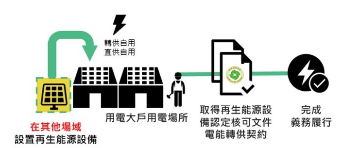

用電大戶
條款介紹
在2021年新公布的政策中，針對電力用戶與台電所簽訂之用電契約容量，其契約容量大於5000kW以上(5MW)，就可定義為用電大戶，並要求五年內設置至少契約容量10% (約500kWp)的綠能。
五年內4種管道履行作法
▲已於110年1月1日正式施行
用電大戶條款履行作法
方案一：設置再生能源發電設備
用電大戶義務設置量（MW）=契約容量X 義務比例（10%）


方案二：設置儲能設備
再生能源義務設置量 X 最小供電時數2小時
電力用戶進行儲能設備設置，且不得參加台電任何輔助服務計畫，所以儲存之電力僅供電力用戶內部調度。（用電大戶所設置儲能設備，應接受現地抽查驗證儲能規格及運作情況。）

方案三：購買再生能源電力及憑證
每年義務設置量 X 每瓩之年發電量（平均值：2,500度）
每瓩之年發電量（2,500度）＝太陽光電（容量因素1,250度/年）、陸域風電（容量因素2,500度/年）、離岸風電（容量因素3,750度/年）之平均值
義務裝置容量 Ｘ 2,500度/瓩 Ｘ代金費率（代金費率為新台幣4元/度）
- 電力用戶於再生能源憑證市場，購得憑證與電力，並提交綠電憑證證號與電力轉供證明，即完成當年度再生能源義務。
- 電力用戶自行購買再生能源憑證與電力形式：與發電業者或售電業者簽訂購電契約之再生能源電力及憑證
方案四：繳納代金
義務設置量 X 每瓩之年發電量 X 當年度代金費率
義務裝置容量 Ｘ 2,500度/瓩 Ｘ代金費率（代金費率為新台幣4元/度）
電力用戶扣除已完成義務額度，由主管機關發文通知繳納代金費用，電力用戶完成繳納代金並取得繳納證明，即完成當年度再生能源義務。
目前早鳥優惠
用電大戶在辦法施行前，若原本就設有再生能源設備，以該設備裝置容量扣減義務，
經濟部也提供最高20%「既設扣減」折抵義務量優惠獎勵，
若再搭配「早鳥優惠」，提早 2 年達成義務量者再享8折（20%義務量）扣減上限，
兩者採合計最高可享6折折扣減（減免40%義務量）。
| 序 | 優惠說明 | 優惠獎勵享有折扣 | |
|---|---|---|---|
| 1 | 條款公告前就已裝設再生能源發電設備 | 既設扣減 | 20% |
| 2 | 在三年內裝置完成再生能源發電設備或儲能設備 | 早鳥優惠 | 20% |
| 3 | 四年內完成最高可減免 | 20% | |
也就是說，若用電大戶在該條款上路前就安裝既有的綠能發電設施，又在第三年完成義務裝置容量，就能將再生能源設置量從原本10%義務量打4折，等於僅須達到6%綠能裝置量即可。